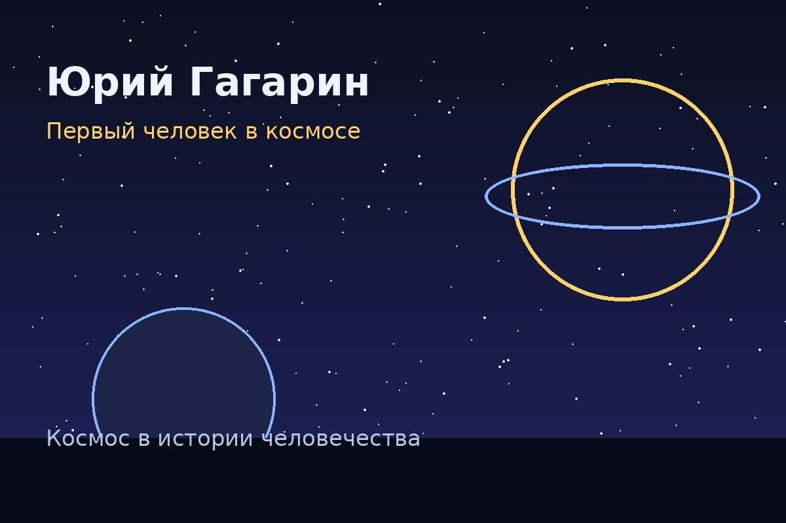
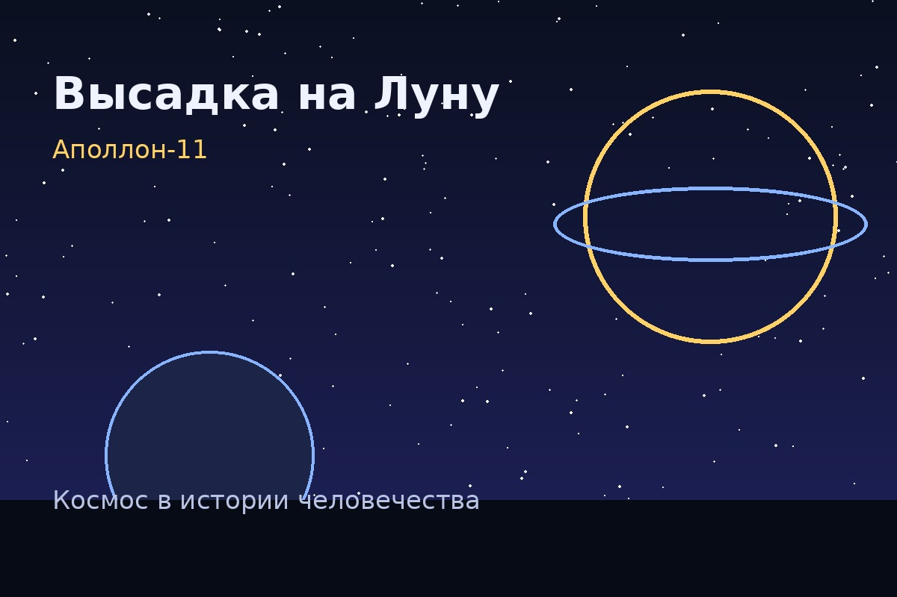

Николай Коперник
Человек, который сдвинул Землю с трона.
Наводи камеру на QR-код, открывай страницу и узнавай, как история человечества шаг за шагом дотянулась до звёзд. Да, от Коперника до Гагарина — путь длинный, но безумно красивый.
Человек, который сдвинул Землю с трона.
Учёный, который посмотрел в телескоп — и не смог развидеть.
Мыслитель о бесконечной Вселенной.
Русский учёный, открывший атмосферу Венеры.
Теоретик космонавтики ещё до эры ракет.
Главный конструктор космической эпохи СССР.
Сигнал, который услышал весь мир.
Первый человек в космосе.
Шаг человека, спор веков и триумф технологий.
Космос как территория сотрудничества.

Для своего времени это было почти интеллектуальное землетрясение. Средневековая картина мира ставила Землю в центр Вселенной, а Коперник аккуратно, но очень уверенно показал: центр — вовсе не там, где человеку удобно.

Он увидел горы на Луне, фазы Венеры, спутники Юпитера и пятна на Солнце. Всё это доказывало: небесный мир вовсе не идеален и неподвижен, как считалось раньше.

Для эпохи, когда многие ещё привыкали к мысли, что Земля — не центр мира, это звучало как космический уровень дерзости. Бруно был не астрономом в строгом смысле, а философом, но его идеи расширили представление человека о масштабе Вселенной.

Это было огромное достижение русской науки. Ломоносов показал, что небесные тела можно изучать как реальные физические объекты, а не просто как светящиеся точки на небе.

Когда полёты в космос казались фантастикой, он уже писал о многоступенчатых ракетах, орбитальных станциях и будущем человечества за пределами Земли. Иногда история науки выглядит как спойлер к будущему — это тот случай.

Именно под его руководством был запущен первый искусственный спутник Земли, а затем отправлен в космос Юрий Гагарин. Долгое время имя Королёва держалось в секрете: его называли просто «Главный конструктор».

Небольшой металлический шар с антеннами облетал Землю и передавал знаменитые радиосигналы. Для мира это стало шоком и восхищением одновременно: космос оказался не далёкой мечтой, а уже реальностью.

Корабль «Восток-1» совершил один виток вокруг Земли. Полёт длился 108 минут, но изменил историю навсегда. После Гагарина космос перестал быть только сферой расчётов и чертежей — в него вошёл человек.

Нил Армстронг и Базз Олдрин вышли на поверхность Луны, а Майкл Коллинз оставался на орбите. Это был не просто успех США в космической гонке, а крупнейший технологический прорыв XX века.

В создании и работе станции участвуют разные страны. На борту проводятся научные эксперименты, проверяются технологии для будущих дальних полётов и изучается влияние космоса на человека.